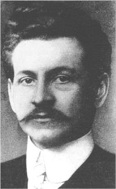

|  |
Schirmer test = this involves folding sterile filter paper strips and inserting them between the lower lid and the globe at the lateral one-third of the lid margin. The result is expressed as millimetres of wetting at 5 minutes. If local anaesthetic is instilled in the eye before performing this test, it is known as the basic Schirmer test.
Otto Schirmer (1864-1918) was born in Greifswald and, after studying in the university of that city as well as in Munich, Freiburg, Königsberg and Halle, succeeded his father, Rudolf Schirmer, to the Chair of Ophthalmology in Greisfswald in 1896; he subsequently went to Kiel (1907) and Strassburg. His contributions to ophthalmology were considerable and varied, the best known being his work on the histology and biochemistry of cataract, his original description of the corneal complications of vaccinia of the eyelids, the first detailed study of rosacea keratitis, and his elaborate description of sympathetic ophthalmitis in the second edition of the Graefe-Saemisch Handbuch. His name, however, is most frequently remembered for his works on the lacrimal passages which included the elegant and simple test for the estimation of lacrimation which bears his name (1903); this was followed by his treatise on the microscope anatomy and physiology of the lacrimal system in the second edition of Graefe-Saemisch Handbuch in 1904, a hereditary task since his father had written on the diseases of the lacrimal apparatus in the first edition of this work (1877). In 1909 he left Strassburg and emigrated to New York where he joined the staff of the New York Postgraduate Medical School, the Herman Knapp Memorial Eye Hospital, and St. Marks and the Bronx Hospitals.
Reference:
Schirmer O: Studien zur Physiologie und Pathologie der Tranenabsonderung und Tranenabfuhr. Arch Klin Exp Ophthalmol 56:197, 1903.